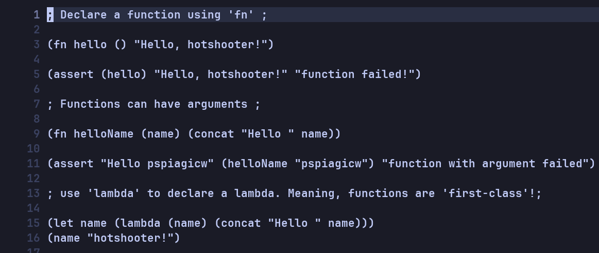
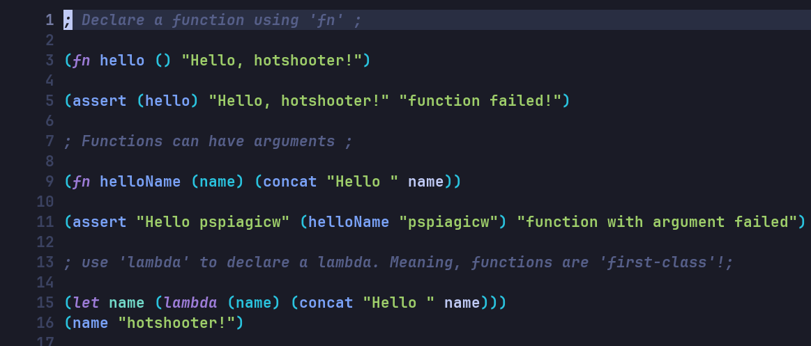

Tree-Sitting
- published
- reading time
- 19 minutes
This is a post on how I wrote a tree-sitter parser for a new language. and how I integrated it into my editor.
The new language being my toy language, hotshot. This language is a LISP-like scripting language.
Here is a snippet of the language:
1(fn fibonacci (n)
2 (cond ((< n 1) 0)
3 ((= n 1) 1)
4 (true (+ (fibonacci (- n 1))
5 (fibonacci (- n 2))))))
6
7(assert (fibonacci 7) 13 "fibonacci failed")
8(assert (fibonacci 10) 55 "fibonacci failed")
Notice how the syntax highlighting is pretty shit.
By the end of this post, you will be able to fix just that (Atleast in your editor)
Before:

After:

Tree-Sitter
I like using neovim.
Editors like neovim including emacs, kakoune and helix use the tree-sitter library for syntax highlighting.
Developed for the atom editor, it’s a incremental parsing library that can perform syntax highlighting, indentation and other wizardry.
It is faster and more accurate than the traditional regex-based highlighting/identation.
My previous post on the composition of editors has more info on it’s working.
See the tree-sitter official docs for complete information.
Dependencies
You will need
-
Node (The
docsmentionv6.0or higher, but my advice is to use the latest version) -
tree-sitter-cli, my advice is to download the latest version from the release page.
You can also install tree-sitter-cli from npm, and you will have to configure your PATH to include the node_modules/.bin directory.
Getting Started
- Create a directory called
tree-sitter-hotshot. - Inside this directory, create a
grammar.jsfile.
You can get started with te following code:
1// grammar.js
2module.exports = grammar({
3 // name of your language
4 name: 'hotshot',
5
6 rules: {
7 source_file: $ => 'hello'
8 }
9});
Grammar
Tree-Sitter grammar works on rules. A rule in essence is
-
A regex to match with text in the source file
-
A combination of other rules (More on that later)
-
A string to match with text.
Tree-Sitter needs only a single rule source_file to declared.
It will start parsing the source code according to this rule.
It helps if you are familiar with BNF forms or used ANTLR/bison/yacc
The grammar currently has a single rule, that matches the text hello.
Generate the parser by running the following command:
tree-sitter generate
It should create a shitload of files in the current directory.
You never have to directly interact with these files, tree-sitter manages these for us.
Although these are important files for the future. If you are using git add them into the repository.
The important files are
grammar.jspackage.json
Writing the Grammar
expression
In my language, most statement returns some value.
It can have a single string, boolean or integer as a statement.
Example
1; this is a coment BTW :) ;
2
3"hello world" ; => return "hello world";
4
569 ; => return 69 ;
6
7true ; => return true ;
Let’s add support for integer, we can add support for other types incrementally.
1module.exports = grammar({
2
3 name: 'hotshot',
4
5 rules: {
6 // Source file has multiple statement
7 source_file: $ => repeat($.statement),
8
9 // Statement can have a expression
10 statement: $ => choice(
11 $.expression,
12 ),
13
14 // Expression can have a integer
15 expression: $ => choice(
16 $.integer,
17 ),
18
19 // Regex
20 integer: $ => /\d+/
21 }
22});
-
Rules are declared with the syntax
rule_name: $ => <rule-content>. -
Rules are referenced with syntax
$.<rule-name>.
The above grammar includes special functions like repeat and choice.
-
repeatmeans the child rule can occur zero or more times. -
choicemeans only one of the child rules will be matched
In essence it means,
-
a
source_filecan have zero or morestatement. -
a
statementcan be of typeexpression -
a
expressioncan be of typeinteger -
a
integerconsists of consecutive one or more digits.
The integer rule uses Regular Expressions, to declare one or more consecutive digits to be a integer.
If you want to implement rules in
tree-sitter, you need to be comfortable withregex
There are multiple times in this post, you will be required to use
tree-sitterto test and parse source code.It goes without saying, you need to run
tree-sitter generateeach time, before doing any testing or parsing.
testing the parser
We can write a few hotshot programs to test if the parsing is accurate.
Save this under programs/integer.ht. We will use the programs directory to store example files.
Tree-Sitter has a full fledged testing framework embedded into it. But it’s not recommended for beginners. It is also quite not useful for such a small grammar.
You can refer it here later
We will be using a simple command to test the parser.
1# Parses all `hotshot` programs and prints only the stats
2tree-sitter parse --quiet --stat programs/*.ht
To test a single file run
It should output
1(source_file [0, 0] - [3, 0]
2 (statement [0, 0] - [0, 3]
3 (expression [0, 0] - [0, 3]
4 (integer [0, 0] - [0, 3])))
5 (statement [2, 0] - [2, 2]
6 (expression [2, 0] - [2, 2]
7 (integer [2, 0] - [2, 2]))))
You can clearly see the AST built for our language here.
comments
We can add support for comments by adding the following rule to the grammar:
1module.exports = grammar({
2 name: 'hotshot',
3
4 extras: $ => [$.comment, /\s/], // Add this line
5
6 rules: {
7 source_file: $ => repeat($.statement),
8
9 // ...
10
11 // Add this line
12 comment: $ => /;[^;]*;/
13 }
14});
-
The
extrasrule is used to specify the tokens that are not part of the syntax tree, but are still important for the parser. -
The
/\s/means all the whitespace characters like space, tabs and newlines.
hotshot supports inline comments. Meaning (+ 1 ;some comments here; 2) is a valid statement.
That’s the reason I have added comments to the extras field.
If your language integrates comments into the syntax tree, you can add it to the statement rule.
If comments are not part of the AST, why are they parsed?
They are parsed because they are still important to the source code. Features like syntax highlighting and indentation still apply to comments.
more expressions
Now that we have added support for integers and comments, we can add support for strings and booleans.
1// ...
2 expression: $ => choice(
3 $.integer,
4 $.boolean,
5 $.string
6 ),
7
8 integer: $ => /\d+/,
9
10 string: $ => /"[^"]*"/,
11
12 boolean: $ => choice(
13 'true',
14 'false'
15 )
16//....
Here’s a example code that has all types of expressions, along with comments.
If you run tree-sitter parse programs/data.ht. You should get a output like this.
1(source_file [0, 0] - [9, 0]
2 (comments [0, 0] - [0, 21])
3 (comments [1, 0] - [1, 20])
4 (statement [3, 0] - [3, 2]
5 (expression [3, 0] - [3, 2]
6 (integer [3, 0] - [3, 2])))
7 (statement [5, 0] - [5, 18]
8 (expression [5, 0] - [5, 18]
9 (string [5, 0] - [5, 18])))
10 (statement [7, 0] - [7, 4]
11 (expression [7, 0] - [7, 4]
12 (boolean [7, 0] - [7, 4])))
13 (statement [8, 0] - [8, 5]
14 (expression [8, 0] - [8, 5]
15 (boolean [8, 0] - [8, 5]))))
hello-world
Let’s add support for the most overrated program of all time, the hello-world program.
1; programs/hello-world.ht ;
2(echo "Hello, World!")
3
4;`echo` is a built-in function in `hotshot`. ;
If you run the test before writing the actual rules.
1tree-sitter parse programs/hello-world.ht
It gives an error, because we haven’t added support for function calls.
1(source_file [0, 0] - [1, 0]
2 (ERROR [0, 0] - [0, 21]
3 (ERROR [0, 0] - [0, 21])))
4programs/hello-world.ht 0.02 ms 909 bytes/ms (ERROR [0, 0] - [0, 21])
Function calls in hotshot are represented by the following syntax:
1(function-name arg1 arg2 arg3)
Add the following code. It has quite a few rules, but don’t fret.
1// ...
2 statement: $ => choice(
3 $.expression,
4 // Paren statement
5 $.sparen
6 ),
7
8 // Paren Statement => '(', paren ,')'
9 sparen: $ => seq('(', $.paren ,')'),
10
11 paren: $ => choice(
12 $.fcall,
13 ),
14
15 fcall: $ => seq(field('name', $.fname), repeat(field('argument', $.returnable))),
16
17 returnable: $ => choice(
18 $.expression,
19 seq('(', $.fcall , ')')
20 ),
21
22 expression: $ => choice(
23 $.integer,
24 $.boolean,
25 $.string,
26 $.identifier
27 ),
28
29 fname: $ => choice(
30 $.identifier
31 ),
32
33 identifier: $ => /[a-zA-Z]+/,
34
35 // ...
-
The above code introduces the tree-sitter function
seq.This dictates a sequence of rules, in a specific order.
-
It also has the
fieldfunction.This function tags the child rule with a name, that we can see in the AST.
-
The code adds rules for
identifiers(variables). -
Identifiers are defined as a sequence of one or more alphabets.
returnablesare different fromstatements.
hotshothas few statements that aren’t supposed to evaluate into values, like function declaration etc.They will be syntax highlighted differently thus separating them from other expressions is required.
I have made separate rule for those that evaluate to values.
1(source_file [0, 0] - [3, 0]
2 (comment [0, 0] - [0, 27])
3 (comment [1, 0] - [1, 25])
4 (statement [2, 0] - [2, 21]
5 (sparen [2, 0] - [2, 21]
6 (paren [2, 1] - [2, 20]
7 (fcall [2, 1] - [2, 20]
8 name: (fname [2, 1] - [2, 5]
9 (identifier [2, 1] - [2, 5]))
10 argument: (returnable [2, 6] - [2, 20]
11 (expression [2, 6] - [2, 20]
12 (string [2, 6] - [2, 20]))))))))
If you can see, we have a lot of psuedo nodes, like sparen, paren, fname.
In tree-sitter syntax, you can add a _ in front of a rule to make it a hidden rule.
Here’s the entire grammar with the hidden rules.
1module.exports = grammar({
2
3 name: 'hotshot',
4
5 extras: $ => [$.comment, /\s/],
6
7 rules: {
8 source_file: $ => repeat($.statement),
9
10 statement: $ => choice(
11 $.expression,
12 $._sparen
13 ),
14
15 _sparen: $ => seq('(', $._paren ,')'),
16
17 _paren: $ => choice(
18 $.fcall
19 ),
20
21 fcall: $ => seq(field('name', $._fname), repeat(field('argument', $._returnable))),
22
23 _returnable: $ => choice(
24 $.expression,
25 seq('(', $.fcall , ')')
26 ),
27
28 expression: $ => choice(
29 $.integer,
30 $.boolean,
31 $.string,
32 $.identifier
33 ),
34
35 _fname: $ => choice(
36 $.identifier
37 ),
38
39 integer: $ => /\d+/,
40
41 boolean: $ => choice('true', 'false'),
42
43 identifier: $ => /[a-zA-Z]+/,
44
45 string: $ => /"[^"]*"/,
46
47 comment: $ => /;[^;]*;/
48
49 }
50});
The hello-world program should parse much cleanly now.
1(source_file [0, 0] - [3, 0]
2 (comment [0, 0] - [0, 27])
3 (comment [1, 0] - [1, 25])
4 (statement [2, 0] - [2, 21]
5 (fcall [2, 1] - [2, 20]
6 name: (identifier [2, 1] - [2, 5])
7 argument: (expression [2, 6] - [2, 20]
8 (string [2, 6] - [2, 20])))))
let
Let’s examine the let statement
1(let a 1)
This statement can be parsed as (function-call arg1 arg2), which is kinda wrong syntax wise.
It’s a separate statement altogether, not a function-call. I want it selected and syntax-highlighted as a separate statement.
But if I put fcall as a expression, there would no way of differenciating the let statement from any other function call
It’s the reason I added the returnable , sparen and paren rules.
There is way to prevent adding them.
It’s to use precedence in defining rules. It tells tree-sitter to give precedence to one kind of statements over another.
But
precedenceis a big topic and a overkill for such a simple language.
For the let statements, add the following code.
1// ..
2 _paren: $ => choice(
3 $.fcall, // Don't forget this comma
4 $.let // Add this line
5 ),
6
7 // rule for 'let' statements.
8 let: $ => seq('let', field('name', $.identifier), field('value', $.expression)),
9
10 //...
11//..
Write the test program to parse.
It should produce the following AST.
1(source_file [0, 0] - [5, 0]
2 (comment [0, 0] - [0, 25])
3 (statement [2, 0] - [2, 9]
4 (let [2, 1] - [2, 8]
5 name: (identifier [2, 5] - [2, 6])
6 value: (expression [2, 7] - [2, 8]
7 (integer [2, 7] - [2, 8]))))
8 (statement [4, 0] - [4, 8]
9 (fcall [4, 1] - [4, 7]
10 name: (identifier [4, 1] - [4, 5])
11 argument: (expression [4, 6] - [4, 7]
12 (identifier [4, 6] - [4, 7])))))
control-flow
Now that we have added support for let statements, we can add support for control-flow statements.
This includes if, cond and while statements.
We can skim over these quite quickly as they are easy to implement and test.
if
if statements in hotshot have a simple syntax.
Both the body and else have a single statement.
1(if condition body-statement else-statement)
2
3; The else part is optional ;
4(if condition body-statement)
- Test Program
- Code
1//...
2 _paren: $ => choice(
3 $.fcall,
4 $.let,
5 $.if
6 ),
7
8 if: $ => seq(
9 'if',
10 field('condition', $._returnable),
11 field('body',$.statement),
12 optional(field('else', $.statement)
13 )),
14
15 //...
16
17 // If statements can return value, thus add them into returnable
18 _returnable: $ => choice(
19 $.expression,
20 seq('(', $.fcall , ')'),
21 seq('(', $.if , ')')
22 ),
23
24 //...
-
The above code has a new function
optional.This function makes it’s argument optional. Cause a
ifstatement might not have aelsepart. -
Output
1(source_file [0, 0] - [8, 0]
2 (comment [0, 0] - [0, 23])
3 (statement [2, 0] - [4, 17]
4 (if [2, 1] - [4, 16]
5 condition: (expression [2, 4] - [2, 8]
6 (boolean [2, 4] - [2, 8]))
7 body: (statement [3, 2] - [3, 15]
8 (fcall [3, 3] - [3, 14]
9 name: (identifier [3, 3] - [3, 7])
10 argument: (expression [3, 8] - [3, 14]
11 (string [3, 8] - [3, 14]))))
12 else: (statement [4, 2] - [4, 16]
13 (fcall [4, 3] - [4, 15]
14 name: (identifier [4, 3] - [4, 7])
15 argument: (expression [4, 8] - [4, 15]
16 (string [4, 8] - [4, 15]))))))
17 (statement [6, 0] - [6, 26]
18 (if [6, 1] - [6, 25]
19 condition: (fcall [6, 5] - [6, 17]
20 name: (identifier [6, 5] - [6, 17]))
21 body: (statement [6, 19] - [6, 25]
22 (expression [6, 19] - [6, 25]
23 (string [6, 19] - [6, 25]))))))
while
while statements in hotshot have the following syntax.
1(while condition body)
- The
bodyis a single statement to execute. Awhilestatement can return something.
1; programs/while.ht ;
2
3(while true
4 (echo "Infinity!"))
5
6(while isTrue
7 (do
8 (let isTrue (checkSomething))
9 "It's true"))
- Code
1//...
2 _paren: $ => choice(
3 $.fcall,
4 $.let,
5 $.if,
6 $.while
7 ),
8
9 while: $ => seq(
10 'while',
11 field('condition', $._returnable),
12 field('body', $.statement)
13 ),
14
15 //...
16
17 // Believe it or not, while statement are returnable
18 _returnable: $ => choice(
19 $.expression,
20 seq('(', $.fcall , ')'),
21 seq('(', $.if , ')'),
22 seq('(', $.while , ')')
23 ),
- Output
1(source_file [0, 0] - [9, 0]
2 (comment [0, 0] - [0, 21])
3 (statement [2, 0] - [3, 23]
4 (while [2, 1] - [3, 22]
5 condition: (expression [2, 7] - [2, 11]
6 (boolean [2, 7] - [2, 11]))
7 body: (statement [3, 4] - [3, 22]
8 (fcall [3, 5] - [3, 21]
9 name: (identifier [3, 5] - [3, 9])
10 argument: (expression [3, 10] - [3, 21]
11 (string [3, 10] - [3, 21]))))))
12 (statement [5, 0] - [8, 15]
13 (while [5, 1] - [8, 14]
14 condition: (expression [5, 7] - [5, 13]
15 (identifier [5, 7] - [5, 13]))
16 body: (statement [6, 1] - [8, 14]
17 (fcall [6, 2] - [8, 13]
18 name: (identifier [6, 2] - [6, 4])
19 argument: (fcall [7, 3] - [7, 30]
20 name: (identifier [7, 3] - [7, 6])
21 argument: (expression [7, 7] - [7, 13]
22 (identifier [7, 7] - [7, 13]))
23 argument: (fcall [7, 15] - [7, 29]
24 name: (identifier [7, 15] - [7, 29])))
25 argument: (expression [8, 2] - [8, 13]
26 (string [8, 2] - [8, 13])))))))
cond
cond is a tricky statement.
It’s syntax is this
- The
conditionis areturnableexpression. Thebodyis a singlestatement
1; programs/cond.ht ;
2
3(cond
4 ((condition1) "condition1 is true")
5 ((condition2) "condition2 is true")
6 (true "nothing is true"))
- Code
1//...
2 _paren: $ => choice(
3 $.fcall,
4 $.let,
5 $.if,
6 $.while,
7 $.cond
8 ),
9
10 cond: $ => seq('cond', repeat(field('argument', $.carg))),
11
12 carg: $ => seq('(',field('condition', $._returnable), field('body', $.statement), ')'),
13
14 //...
15
16 _returnable: $ => choice(
17 $.expression,
18 seq('(', $.fcall , ')'),
19 seq('(', $.if , ')'),
20 seq('(', $.while , ')'),
21 seq('(', $.cond , ')')
22 ),
23
24//....
- Output
1(source_file [0, 0] - [7, 0]
2 (comment [0, 0] - [0, 20])
3 (statement [3, 0] - [6, 29]
4 (cond [3, 1] - [6, 28]
5 argument: (carg [4, 4] - [4, 39]
6 condition: (fcall [4, 6] - [4, 16]
7 name: (identifier [4, 6] - [4, 15])
8 argument: (expression [4, 15] - [4, 16]
9 (integer [4, 15] - [4, 16])))
10 (statement [4, 18] - [4, 38]
11 (expression [4, 18] - [4, 38]
12 (string [4, 18] - [4, 38]))))
13 argument: (carg [5, 4] - [5, 39]
14 condition: (fcall [5, 6] - [5, 16]
15 name: (identifier [5, 6] - [5, 15])
16 argument: (expression [5, 15] - [5, 16]
17 (integer [5, 15] - [5, 16])))
18 (statement [5, 18] - [5, 38]
19 (expression [5, 18] - [5, 38]
20 (string [5, 18] - [5, 38]))))
21 argument: (carg [6, 4] - [6, 28]
22 condition: (expression [6, 5] - [6, 9]
23 (boolean [6, 5] - [6, 9]))
24 (statement [6, 10] - [6, 27]
25 (expression [6, 10] - [6, 27]
26 (string [6, 10] - [6, 27])))))))
functions
Now that we have added support for control-flow statements, we can add support for function declaration.
This also includes lambda functions.
Functions have the following syntax
1(fn function-name (param1 param2) body)
function-nameis aidentifierparamNis aidentifierbodyis a single statement
Example
- Code
1//...
2 _paren: $ => choice(
3 $.fcall,
4 $.let,
5 $.if,
6 $.while,
7 $.cond,
8 $.fdec
9 ),
10
11 fdec: $ => seq(
12 'fn',
13 field('name', $.identifier),
14 '(',
15 repeat(field('parameter', $.identifier)),
16 ')',
17 field('body', $.statement),
18 ),
19
20//...
- Output
1(source_file [0, 0] - [5, 0]
2 (comment [0, 0] - [0, 25])
3 (statement [2, 0] - [2, 31]
4 (fdec [2, 1] - [2, 30]
5 name: (identifier [2, 4] - [2, 9])
6 body: (statement [2, 12] - [2, 30]
7 (fcall [2, 13] - [2, 29]
8 name: (identifier [2, 13] - [2, 17])
9 argument: (expression [2, 18] - [2, 29]
10 (string [2, 18] - [2, 29]))))))
11 (statement [4, 0] - [4, 23]
12 (fdec [4, 1] - [4, 22]
13 name: (identifier [4, 4] - [4, 7])
14 parameter: (identifier [4, 8] - [4, 9])
15 parameter: (identifier [4, 10] - [4, 11])
16 body: (statement [4, 13] - [4, 22]
17 (fcall [4, 14] - [4, 21]
18 name: (identifier [4, 14] - [4, 17])
19 argument: (expression [4, 18] - [4, 19]
20 (identifier [4, 18] - [4, 19]))
21 argument: (expression [4, 20] - [4, 21]
22 (identifier [4, 20] - [4, 21])))))))
lambda
lambda is a name-less function.
It’s main function is to pass it around as a argument, to be used by other functions like map, filter etc.
You can bind it to a variable, meaning it is a returnable.
1; programs/lambda.ht ;
2
3(lambda () "something")
4
5(lambda (x y) (add x y))
6
7(let a (lambda () "something"))
- The code is similar to
fdec, but excludes the name of the function. - Also it’s a
returnable, unlikefdec.
1//...
2 _paren: $ => choice(
3 $.fcall,
4 $.let,
5 $.if,
6 $.while,
7 $.cond,
8 $.fdec,
9 $.lambda
10 ),
11
12 lambda: $ => seq(
13 'lambda',
14 '(',
15 repeat(field('argument', $.identifier)),
16 ')',
17 field('body', $.statement),
18 ),
19
20
21 _returnable: $ => choice(
22 $.expression,
23 seq('(', $.fcall , ')'),
24 seq('(', $.if , ')'),
25 seq('(', $.while , ')'),
26 seq('(', $.cond , ')'),
27 seq('(', $.lambda , ')')
28 ),
29
30//...
- Output
1(source_file [0, 0] - [6, 0]
2 (comment [0, 0] - [0, 22])
3 (statement [3, 0] - [3, 23]
4 (lambda [3, 1] - [3, 22]
5 body: (statement [3, 11] - [3, 22]
6 (expression [3, 11] - [3, 22]
7 (string [3, 11] - [3, 22])))))
8 (statement [5, 0] - [5, 24]
9 (lambda [5, 1] - [5, 23]
10 argument: (identifier [5, 9] - [5, 10])
11 argument: (identifier [5, 11] - [5, 12])
12 body: (statement [5, 14] - [5, 23]
13 (fcall [5, 15] - [5, 22]
14 name: (identifier [5, 15] - [5, 18])
15 argument: (expression [5, 19] - [5, 20]
16 (identifier [5, 19] - [5, 20]))
17 argument: (expression [5, 21] - [5, 22]
18 (identifier [5, 21] - [5, 22])))))))
testing
Ensure all the programs we wrote earlier are still parsing correctly.
$ tree-sitter parse --quiet --stat programs/*.ht
It should give the following output.
$ Total parses: 9; successful parses: 9; failed parses: 0; success percentage: 100.00%; average speed: 6000 bytes/ms
end
We have successfully implemented the parsing of a LISP-like language.
Parsing is useless if don’t do anything with the AST.
We can implement
- Syntax Highlighting
- Indentation
- Select parts of code using tree-sitter queries.
But there are some advantages to writing a tree-sitter parser like this.
-
You can prototype your own language quickly using
tree-sitterbefore writing a handwritten lexer/parser. -
Having syntax highlighting to your custom language is useful while developing a
interpreteror acompilerfor it.
BTW Hotshot’s Tree-Sitter can be referenced for the entire code.
next-post
We will learn how to implement syntax-highlighting along with tree-sitter queries
We will also see how nvim-treesitter works with the tree-sitter library.
references
If want to make anything other than a toy langauge refer to these babes below.
-
Covers literally everything
-
Covers precedence, associativity, actual tree-sitter tests etc.
-
Covers making custom scanners, embedding tree-sitter etc.